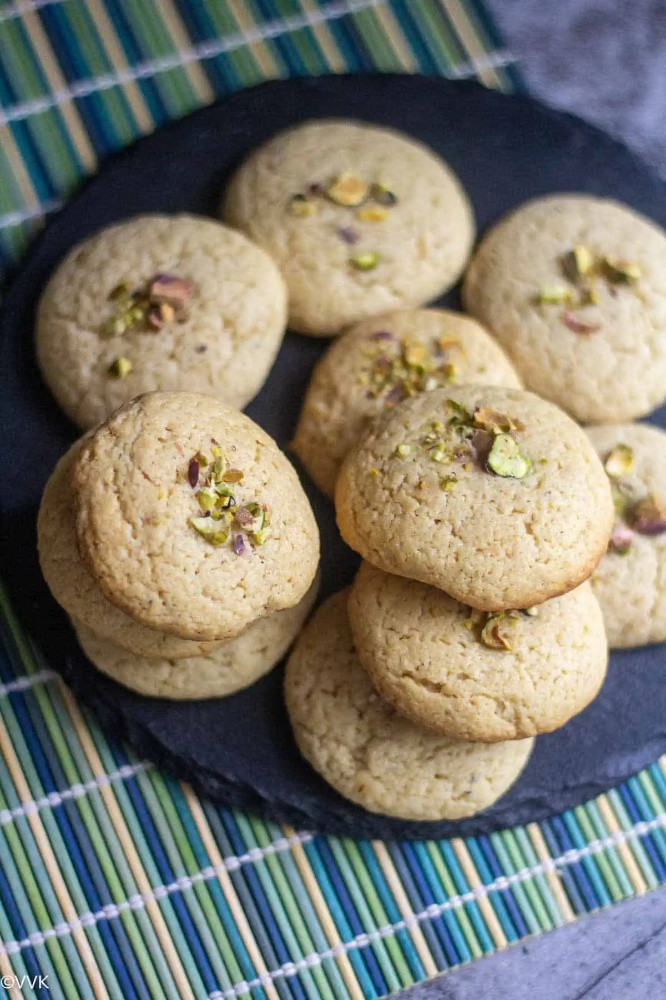
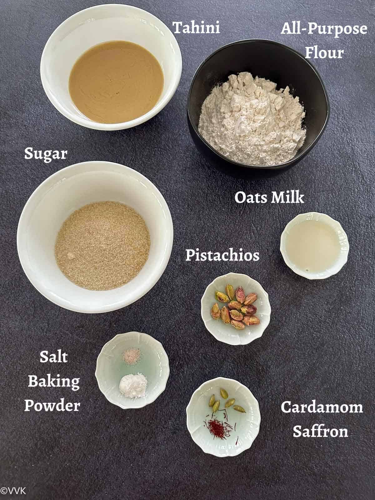
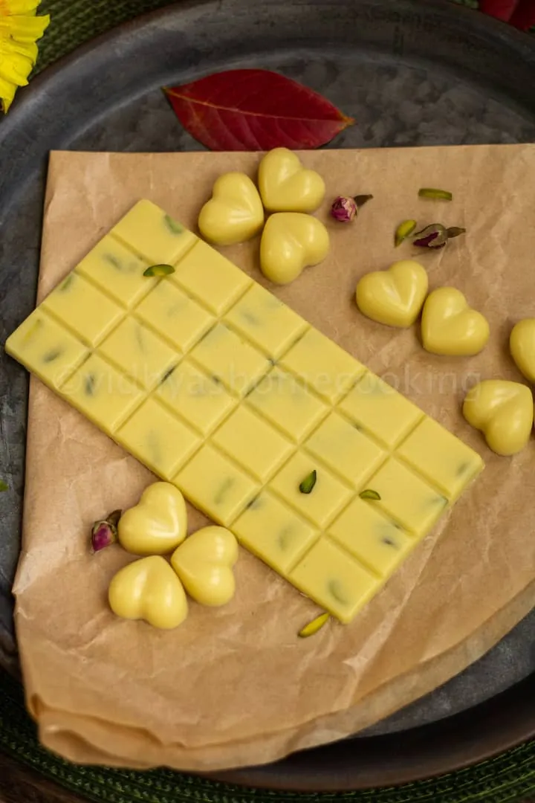
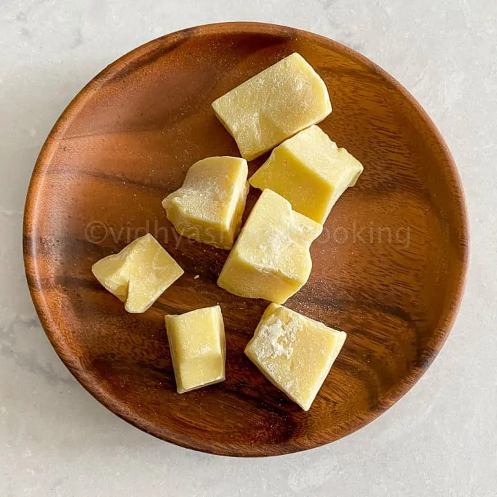
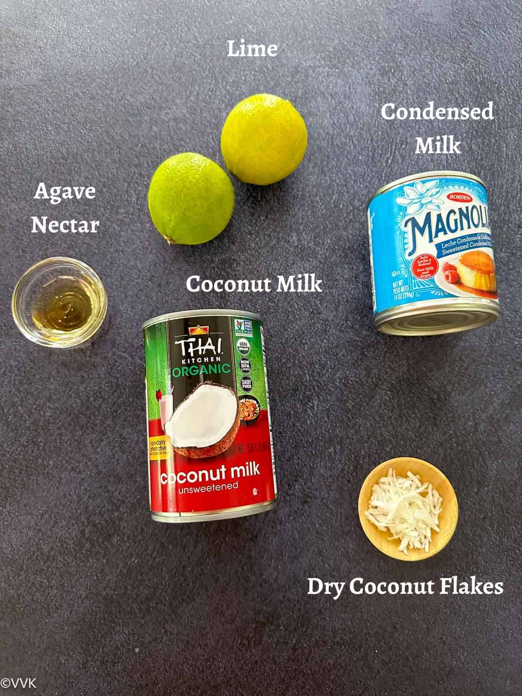

Vegan Tahini Cookies | Cardamom & Saffron Flavored Tahini Cookies

It’s been a while since I shared any cookie recipes. More than
cakes, we love cookies, and my son enjoys them year around and
loves to take them as snacks to school. You can find several
eggless cookie recipes on my blog, and today, I will share our new
favorite – tahini cookies! I love the flavors of cardamom,
saffron, rose, and pistachios. They always bring in a festive
vibe. Do check out our gluten-free chickpea flour cookies and
gulab jamun cookies. I am sure you will love them. So for these
tahini cookies, too, I went with cardamom and saffron flavors.

Instructions
-
In a coffee grinder, add the cardamom seeds and saffron strands.
- Add ½ cup of sugar and blend them into a smooth powder.
-
Add powdered sugar with cardamom, saffron, and tahini in a
mixing bowl.
-
Mix the tahini and sugar well using a spatula or a hand whisk.
-
Now gently mix the other dry ingredients – all-purpose flour,
salt, and baking powder.here aren't any lumps of dry flour. You
can use your hand to mix and bring the cookie dough together.
-
Cover the cookie with a cling film and refrigerate for 30 to 40
minutes.
-
Preheat the oven to 350 deg F. When the oven temperature reaches
300 deg, I scoop out the cookies.
-
In a cookie pan, either line an aluminium foil or parchment
paper. Scoop 1 to 1.5 tbsp of the cookie dough, gently roll it
with your palms, and flatten them. Place these flattened cookies
on the baking tray. Now place a few chopped pistachios in the
center.
-
Bake the cookies for 12 to 15 minutes. Make sure you are baking
the cookies on the middle rack.
-
After baking, take the cookies out and wait for two minutes.
Then transfer it to the cooling rack and let it cool for atleast
5 to 7 minutes. I know it’s hard, but please let the cookies
cool before relishing them.
Easy White Chocolate Recipe

How about making some chocolates at home? Learn how to make simple
white chocolate with just three ingredients! Making white
chocolate at home is not as difficult as you think. With the right
ingredients, you can make some delicious white chocolate at home
and let’s get straight into the details. We love white chocolates,
and I have shared white chocolate mummies and white chocolate
eggs, white hot chocolate, peppermint barks and fudge. I went with
store-bought white chocolate chips but you can very well use this
homemade white chocolate for all those recipes.

Instructions
-
Let the cacao butter melt. Make sure to whisk the cacao butter
during the melting process for even melting. Here are my melted
cacao butter and the double-boiler setup.
- Now add the sifted powdered sugar and mix well.
-
Next, add the milk powder and mix well. Turn off the heat at
this stage and remove the chocolate bowl, and set it aside.
-
For a smooth texture, we need to blend the white chocolate mix.
Transfer it to a blender or a mixer jar.
- Now pour the white chocolate mixture into the molds.
-
Place it in the fridge or freezer to set. I always keep it in
the fridge for 1.5 to 2 hours. Once the chocolate is firm and
set, you can easily unmold it and enjoy it!
-
Store the chocolate in an air-tight container in the fridge for
longer shelf life.
Limonada De Coco | Coconut Limeade
I love lemonades and limeades, and I have a few on my blog, like
kulukki sarbath, limonana, shikanji, barley lemonade, and more. I
love the tangy and citrus flavor, and even in restaurants, I
always look out for unique lemonades and limeades. So I first
enjoyed this recipe in a restaurant in Myrtle Beach, South
Carolina, and I loved the flavors. Coconut milk and limes are my
favorite ingredients, and when I saw a drink with these two
ingredients, I immediately ordered this coconut limeade; needless
to say, I enjoyed it so much. I wanted to try it out at home, and
when I checked on Google, I also learned that this is a popular
recipe in Colombia, known as limonada de coco there.

Instructions
-
Add the coconut milk, lime juice, and sweetened condensed milk
into a blender.
-
Blend it thoroughly for 45 to 50 seconds until well combined.
-
Refrigerate or serve immediately with some crushed ice cubes
added. If you are using unsweetened coconut, add that before
serving.